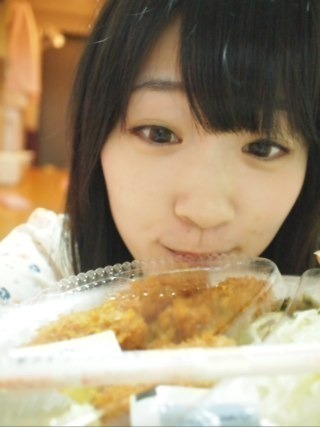
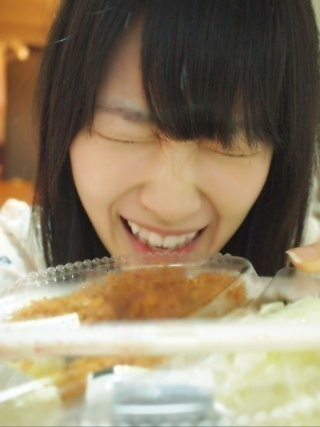
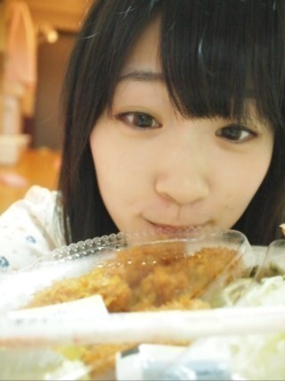
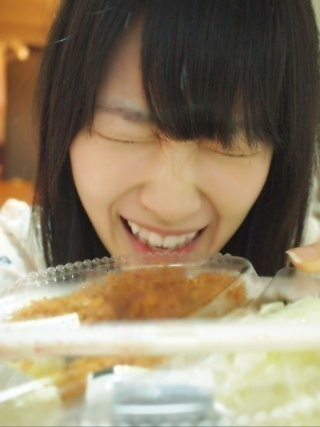

2012/1020Sat（´-`）.｡oO(かずみん×107
皆さん、こんばんは(*^_^*)
いつも応援ありがとうございます。
ゆみ姉の卒業が発表されましたね。
まだ卒業まで時間があるので、
それまではいつも通り面白い
ゆみ姉と笑顔で過ごしていけたら
いいなぁと思います。
水色の食べ物も
皆さん教えてくださって
ありがとうございます\(//∇//)\
水色焼きそば...水色アイス...
水色肉まん...
どれも美味しそうっ ♪
私はレインボーハットの
カラフルなアイスがおすすめです！
ぜひ皆さん食べてみて下さい(^^)
〜季節は食欲の秋〜
高山はこの前奮発して
大好きな大好きな牡蠣フライ弁当を
買ってしまいました。

くんくん♪
美味しそぉ\(//∇//)\

食べるぜぜぜぜぜーい＼(^o^)／
という食事前の
リアルな出来事でした！
本当に美味しかったです(*^u^*)
牡蠣は食べ物の中で
一番といってもいいくらい
好きです！
デザート系ではカボチャ、
おかず系では牡蠣って感じですね♪
実は一昨年くらい？に
牡蠣が原因でおなかがいたく
なっちゃったんですよ(>_<)
しかもハロ紺を見に父と祖母と
東京へ来てた夜！
もう大変でしたが、
牡蠣はトラウマにはならず、
代わりにしゃぶしゃぶが
トラウマになりました。
なぜでしょう？
ヒントは
牡蠣を食べたのはハロ紺の前の日。
牡蠣の潜伏期間は24時間くらい。
ハロ紺が終わってからしゃぶしゃぶの
食べ放題に家族と行って、その後
お腹いたが発症。
わかりましたか(-A-;？
今でもしゃぶしゃぶは
あんまり食べれません...
牡蠣は本当に大好き！
デジモンやガッシュと同じくらい
牡蠣も大好きです\(//∇//)\
なんか渋いですが、
洋服とかは甘いものが好きです(^^)
今日もスイマーでガジ可愛い
マフラーを買っちゃいました♪
手袋とかマフラーとか
制服にプラスしてあげると
可愛いですよね！
もう今年は制服のコートとか
セーターを着れないと思うと
悲しいです(T_T)
でも冬のおしゃれは大好きなので
楽しみだなぁ♪
----------
それでは、今日はこの辺で(^^)
寒くなってきましたが、
皆さん、体調には充分に
気をつけて下さいね(>_<)
おやすみなさい...☆
いつも応援ありがとうございます。
ゆみ姉の卒業が発表されましたね。
まだ卒業まで時間があるので、
それまではいつも通り面白い
ゆみ姉と笑顔で過ごしていけたら
いいなぁと思います。
水色の食べ物も
皆さん教えてくださって
ありがとうございます\(//∇//)\
水色焼きそば...水色アイス...
水色肉まん...
どれも美味しそうっ ♪
私はレインボーハットの
カラフルなアイスがおすすめです！
ぜひ皆さん食べてみて下さい(^^)
〜季節は食欲の秋〜
高山はこの前奮発して
大好きな大好きな牡蠣フライ弁当を
買ってしまいました。

くんくん♪
美味しそぉ\(//∇//)\

食べるぜぜぜぜぜーい＼(^o^)／
という食事前の
リアルな出来事でした！
本当に美味しかったです(*^u^*)
牡蠣は食べ物の中で
一番といってもいいくらい
好きです！
デザート系ではカボチャ、
おかず系では牡蠣って感じですね♪
実は一昨年くらい？に
牡蠣が原因でおなかがいたく
なっちゃったんですよ(>_<)
しかもハロ紺を見に父と祖母と
東京へ来てた夜！
もう大変でしたが、
牡蠣はトラウマにはならず、
代わりにしゃぶしゃぶが
トラウマになりました。
なぜでしょう？
ヒントは
牡蠣を食べたのはハロ紺の前の日。
牡蠣の潜伏期間は24時間くらい。
ハロ紺が終わってからしゃぶしゃぶの
食べ放題に家族と行って、その後
お腹いたが発症。
わかりましたか(-A-;？
今でもしゃぶしゃぶは
あんまり食べれません...
牡蠣は本当に大好き！
デジモンやガッシュと同じくらい
牡蠣も大好きです\(//∇//)\
なんか渋いですが、
洋服とかは甘いものが好きです(^^)
今日もスイマーでガジ可愛い
マフラーを買っちゃいました♪
手袋とかマフラーとか
制服にプラスしてあげると
可愛いですよね！
もう今年は制服のコートとか
セーターを着れないと思うと
悲しいです(T_T)
でも冬のおしゃれは大好きなので
楽しみだなぁ♪
----------
それでは、今日はこの辺で(^^)
寒くなってきましたが、
皆さん、体調には充分に
気をつけて下さいね(>_<)
おやすみなさい...☆
2012/10/20 22:48
コメント(446)
どーも！オレンジです！
ゆみ姉卒業…
本当に悲しい…
頑張って！
今までありがとう！
お疲れ様(^^)
くらい直接いう機会がほしい(ToT)
このままお別れはツラすぎる(ToT)
また33人になっちゃうのか…
できる限り俺もゆみ姉を応援する
CDデビューが待ち遠しいね！
今日は敢えて他のことには触れずにコメント終わりにするねm(__)m
それじゃあこの辺で！
今日はお疲れ様(*^^*)
明日も頑張ろう
愛羅武勇
 オレンジ
オレンジ
ゆみ姉卒業…
本当に悲しい…
頑張って！
今までありがとう！
お疲れ様(^^)
くらい直接いう機会がほしい(ToT)
このままお別れはツラすぎる(ToT)
また33人になっちゃうのか…
できる限り俺もゆみ姉を応援する
CDデビューが待ち遠しいね！
今日は敢えて他のことには触れずにコメント終わりにするねm(__)m
それじゃあこの辺で！
今日はお疲れ様(*^^*)
明日も頑張ろう
愛羅武勇
やっほー
いわしだよー
かずみん相変わらず写真が最高w
画質も最高！
そしてゆみねぇが(┳◇┳)
悲しいけど応援しよう！
じゃあね
いわし
かずみさんと牡蠣の写メが笑えます。
かずみさんお疲れさま。
ゆみ姉の分もかずみさん頑張れ。
夢叶えなきゃね。
かずみさんお疲れさま。
ゆみ姉の分もかずみさん頑張れ。
夢叶えなきゃね。
一緒にゆみ姉を応援してください！
ゆみ姉の卒業残念です。
ゆみ姉の卒業は悲しいですね(>__<)
かずみんも風邪引かないように気を付けてね！
またコメントしますね(*^^*)
かずみんも風邪引かないように気を付けてね！
またコメントしますね(*^^*)
牡蠣って美味しい(´Д` )？
食わず嫌いなのよ！
お腹痛くなるっていう先入観で食べれない笑
早く来週の横浜個別いきたいよー！
かずみんに覚えてもらえてたら嬉しい。
口ほくろと赤ネクタイね！
お願いだから覚えて(´･_･`)
食わず嫌いなのよ！
お腹痛くなるっていう先入観で食べれない笑
早く来週の横浜個別いきたいよー！
かずみんに覚えてもらえてたら嬉しい。
口ほくろと赤ネクタイね！
お願いだから覚えて(´･_･`)
牡蠣フライにタルタル最強伝説!!
一実、サザエは？食べれる？
一実、サザエは？食べれる？
かずみん、私漢字読めない(T_T)←えwww
何フライっていうの？(；・∀・)
こないだかずみんが言ってた洋服のサイト見てみたら可愛くて安いのいっぱいあったー(*´ー｀*)でも、お店の名前、発音難しいね( ´_ゝ`)かずみんちゃんと言える？(笑)
聞いて！HK 3の３人は土星人(＋)なんだよー！３人とも同じってすごいねー＼(^o^)／
何フライっていうの？(；・∀・)
こないだかずみんが言ってた洋服のサイト見てみたら可愛くて安いのいっぱいあったー(*´ー｀*)でも、お店の名前、発音難しいね( ´_ゝ`)かずみんちゃんと言える？(笑)
聞いて！HK 3の３人は土星人(＋)なんだよー！３人とも同じってすごいねー＼(^o^)／
千葉ってなんか魚介類は豊富ってイメージでしたが、その辺の耐性は変わらないもん
なんでやんすな～～(=°ω°=）((((゜д゜;))))カキフライくんかくんかな♪かずみんも
よか感じですなも～～。にしても好物たべるぞって感じでげすね。水色って
そんなにあるんでやんすな～～(-_☆)(〃⌒ー⌒〃)∫゛しゃぶしゃぶもその内に
食べれるようになりますよ～～。岩瀬さんは相当迷われたんでしょうな
って感じですよね～((((゜д゜;))))(￣□￣;)!!
最近よんだ『小説フランス革命８』(著・佐藤賢一)も読みごたえがすばらしかったです
なんでやんすな～～(=°ω°=）((((゜д゜;))))カキフライくんかくんかな♪かずみんも
よか感じですなも～～。にしても好物たべるぞって感じでげすね。水色って
そんなにあるんでやんすな～～(-_☆)(〃⌒ー⌒〃)∫゛しゃぶしゃぶもその内に
食べれるようになりますよ～～。岩瀬さんは相当迷われたんでしょうな
って感じですよね～((((゜д゜;))))(￣□￣;)!!
最近よんだ『小説フランス革命８』(著・佐藤賢一)も読みごたえがすばらしかったです
正直ゆみねえの卒業は突然で驚いてる。
でも自分で悩んだすえ、大きな決断をして決めた道だから応援する！
残り少ない一緒にいれる時間を大切にね^^
牡蠣俺も好き！
めっちゃおいしいよね♪
そんな事件があったのかー
大変だったね；；
かずみんはオシャレだから冬の私服も楽しみにしてる！
次の個別の私服に期待＾＾
最近ほんと寒くなってきたから体調には気をつけて！
朝と夜はあったくね＾＾
明日も１日ファイティーン☆
でも自分で悩んだすえ、大きな決断をして決めた道だから応援する！
残り少ない一緒にいれる時間を大切にね^^
牡蠣俺も好き！
めっちゃおいしいよね♪
そんな事件があったのかー
大変だったね；；
かずみんはオシャレだから冬の私服も楽しみにしてる！
次の個別の私服に期待＾＾
最近ほんと寒くなってきたから体調には気をつけて！
朝と夜はあったくね＾＾
明日も１日ファイティーン☆
(^^)本当に牡蠣が好きなんだね!幸せいっぱいの笑顔！可愛い。ソース派？タルタルソース派？醤油派？
では(^^)/
では(^^)/
お疲れー！
牡蠣フライ俺もすきだよー！
俺は常にお腹の調子不調気味なのでお腹痛いの慣れてます(^O^)／
うーん！
写メかわいーなー笑笑
早く横浜で握手したいー！
牡蠣フライ俺もすきだよー！
俺は常にお腹の調子不調気味なのでお腹痛いの慣れてます(^O^)／
うーん！
写メかわいーなー笑笑
早く横浜で握手したいー！
ゆみ姉の卒業。
そう。悲観的に捉えすぎずに、残された時間を楽しむことが最優先ですね。
アメイジングな時間をゆみ姉とお過ごしください。
3rdの残りの活動、ゆみ姉と一緒に、楽しんでくださいね。
そう。悲観的に捉えすぎずに、残された時間を楽しむことが最優先ですね。
アメイジングな時間をゆみ姉とお過ごしください。
3rdの残りの活動、ゆみ姉と一緒に、楽しんでくださいね。
ゆみ姉の卒業は残念だけど優しく背中を押してあげなね！
残りの期間ゆみ姉との時間を大切に。
牡蠣うまいよね！！！
俺も食べたい！！！
頂戴←
かずみんも風邪ひかんようにきをつけてな！！
さかちょん
かずみーん＼(^o^)／
しゃぶしゃぶの豚ナ？
私事ですが
僕もカボ活しましたー
かぼちゃのシュークリーム！
美味しかったよー
一実さんの冬コーディネート楽しみです♪
しゃぶしゃぶの豚ナ？
私事ですが
僕もカボ活しましたー
かぼちゃのシュークリーム！
美味しかったよー
一実さんの冬コーディネート楽しみです♪
本当にカキフライが好きなんだね、こっちまで嬉しくなっちゃった。
かずみんこんばんわー
今日かずみんに早く会いたくなる出来事がありました
やまちゃんと連番するんでそのときに教えます(笑)
取りあえず牡蠣の写メ可愛い←
ではでは！
アデュー
こうき
しゃぶしゃぶが身代わりになったのか・・・かわいそうに（笑）
ゆみ姉の卒業は寂しいですがおめでたいこと
乃木坂最後の日まで写真一杯撮りまくってください
ゆみ姉の卒業は寂しいですがおめでたいこと
乃木坂最後の日まで写真一杯撮りまくってください
食べ過ぎてお腹壊さないでね♪
それにしてもかずみん最高＼(^o^)／
アメイジング＼(^o^)／
おやすみww
それにしてもかずみん最高＼(^o^)／
アメイジング＼(^o^)／
おやすみww
かずみんこんばんわ(o・・o)/
ゆみ姉は悲しいけど本人が決めた道
応援するしかww
牡蠣うまいよな
でもカボチャだけは無理や！
ゆーてりんごしかw
でも梨が好き！
デジモンの話したいわぁ
何モンが好きなんかめっちゃ気になる(>_<)
教えてー！
ほなねﾉｼ
ゆみ姉は悲しいけど本人が決めた道
応援するしかww
牡蠣うまいよな
でもカボチャだけは無理や！
ゆーてりんごしかw
でも梨が好き！
デジモンの話したいわぁ
何モンが好きなんかめっちゃ気になる(>_<)
教えてー！
ほなねﾉｼ
牡蠣フライ美味しそうですね♪(*^^*)
けど、自分食べたときないんですよね(笑)
それと、なぜしゃぶしゃぶがトラウマになったのか全然わかりませんでした(T_T)
自分もガッシュ大好きなので、今度握手会行くときに話したいです！♪
これからも応援してるので頑張って下さい！♪(*^^*)
けど、自分食べたときないんですよね(笑)
それと、なぜしゃぶしゃぶがトラウマになったのか全然わかりませんでした(T_T)
自分もガッシュ大好きなので、今度握手会行くときに話したいです！♪
これからも応援してるので頑張って下さい！♪(*^^*)
かずみんは牡蠣が好きなんだね。初めて知った、ぼくはね貝類大体食べれないけどあわびの刺身だけは食べられるんだよね。なんでかな？かずみんはあわびの刺身は食べれる？
かずみんマジカワイイなぁ！
俺はデジモンもガッシュも好きだけど
それ以上にかずみんが大好き！！！
でも実は牡蠣は苦手・・・
実は…
今日の夕飯にカキフライ食べたぜぜぜぜーい(｀・ω・´)
ガジ美味しかった(はーと
やばい(；・∀・)
思い出しただけでお腹が空いてきた((汗
アメイジング＼(^o^)／
ってことで…
そろそろ寝ますねw
♪(ｏ・ω・)ノ))
今日の夕飯にカキフライ食べたぜぜぜぜーい(｀・ω・´)
ガジ美味しかった(はーと
やばい(；・∀・)
思い出しただけでお腹が空いてきた((汗
アメイジング＼(^o^)／
ってことで…
そろそろ寝ますねw
♪(ｏ・ω・)ノ))
かずみん こんばんは (*^_^*)
ゆみ姉 の卒業
かなり驚いた
正直言うと寂しい…
でも自分の目指す道に進むために
ゆみ姉 本人が決めたことだもんね
笑顔で見送ろう！
水色の食べ物そんなのあるんやね！(◎_◎;)
食べてみたい♪
牡蠣かぁ (´Д` )
デジモンもガッシュも大好きだけど
牡蠣はちょっと苦手かも…
しゃぶしゃぶ トラウマになったのは
しゃぶしゃぶ 食べてる時に牡蠣の食あたりがやってきて気分が悪くなったってことでいいのカナ？
それとももしかして
しゃぶしゃぶ の途中で戻しちゃったとか…？
本当に寒くなってきたし
かずみん も風邪には気をつけてね( ^_^)/~~~
こんばんは!!
牡蠣うまそー！
レモンかける派？
やば、お腹すいてきた。
牡蠣うまそー！
レモンかける派？
やば、お腹すいてきた。
お疲れ様です！！
ゆみ姉のことめっちゃびっくりしました！
これからも頑張ってほしいですね！
カラフルなアイス食べてみますーー(´ω`)
カキフライ弁当美味しそうですね、顔でわかります(´ω`)
しゃぶしゃぶにそんなトラウマが…食べれなくても仕方ないですよね(-_-;)
冬のアイテムは可愛いから俺もオシャレ大好きです！
体に気をつけてー
おやすみなさい☆GOODNIGHT☆
ゆみ姉のことめっちゃびっくりしました！
これからも頑張ってほしいですね！
カラフルなアイス食べてみますーー(´ω`)
カキフライ弁当美味しそうですね、顔でわかります(´ω`)
しゃぶしゃぶにそんなトラウマが…食べれなくても仕方ないですよね(-_-;)
冬のアイテムは可愛いから俺もオシャレ大好きです！
体に気をつけてー
おやすみなさい☆GOODNIGHT☆
かずみん こんばんは(^-^*)/
ゆみ姉さんのラストまで、たっぷり甘えて楽しんでください♪
やっぱり前向きなポジティブかずみんには、ゆみ姉も元気付けられると思いますp(^^)q
かずみん牡蠣が大好きなんだ☆
俺も大好き(^O^)/
三重県に牡蠣尽くし料理食べに行った時は、大絶賛でした☆☆☆
佃煮は、ホントに最高☆
でも、やっぱ１番はカキフライだね
p(^^)q
ゆみ姉さんのラストまで、たっぷり甘えて楽しんでください♪
やっぱり前向きなポジティブかずみんには、ゆみ姉も元気付けられると思いますp(^^)q
かずみん牡蠣が大好きなんだ☆
俺も大好き(^O^)/
三重県に牡蠣尽くし料理食べに行った時は、大絶賛でした☆☆☆
佃煮は、ホントに最高☆
でも、やっぱ１番はカキフライだね
p(^^)q
ボクは牡蠣わ食わず嫌いです(グロイので)どんな味なんですか？
乃木坂では「卒業」って形は初めてだからやっぱり寂しいね。
けどきっとゆみ姉も考えに考え抜いた決断だろうから、自分の新たな夢に向かう前向きな卒業だと信じたい！
かずみんも自分の夢を信じてこれからもポジティブ＼(^o^)／に突き進んでね。
かずみんの夢のためなら全力で応援するよ！
美味しそうな牡蠣を前にしたかずみん、どれも可愛くて微笑ましい( ´ ▽ ` )
しゃぶしゃぶが嫌いで牡蠣とかぼちゃが好きってほんと渋いね～。
デジモンやガッシュと同じくらいって言われてもよく分からないけどｗ
制服にマフラーは反則です、はい。
女の子が寒そうに、マフラーに顔をうずめる仕草を見るとキュンキュンしてしまいます。
まだ冬ではないけど、今度のパシフィコ横浜での個握、かずみんの私服がすごく楽しみだぁ～（＾◇＾）
けどきっとゆみ姉も考えに考え抜いた決断だろうから、自分の新たな夢に向かう前向きな卒業だと信じたい！
かずみんも自分の夢を信じてこれからもポジティブ＼(^o^)／に突き進んでね。
かずみんの夢のためなら全力で応援するよ！
美味しそうな牡蠣を前にしたかずみん、どれも可愛くて微笑ましい( ´ ▽ ` )
しゃぶしゃぶが嫌いで牡蠣とかぼちゃが好きってほんと渋いね～。
デジモンやガッシュと同じくらいって言われてもよく分からないけどｗ
制服にマフラーは反則です、はい。
女の子が寒そうに、マフラーに顔をうずめる仕草を見るとキュンキュンしてしまいます。
まだ冬ではないけど、今度のパシフィコ横浜での個握、かずみんの私服がすごく楽しみだぁ～（＾◇＾）
こんばんわ。
牡蠣フライとかずみん
なにそのストーリーチックな３連写メ。
面白すぎるんですけど。
かずみんやっぱ最強だな。
ゆみ姉の卒業は、
いつも一緒に過ごしてきたメンバーのみんなには溢れる想いがたくさんあると思うしファンも募る想いはいろいろあると思うけど、
ゆみ姉が悩みぬいてだした決断だし、
それだけ追い求める夢は大きいものだと思うから、
笑顔で見送りたいですね。
そしてこれからもゆみ姉の活躍を見守りたい。
かずみん、たぶんそれ、しゃぶしゃぶ食べても大丈夫だと思うよ。
牡蠣フライとかずみん
なにそのストーリーチックな３連写メ。
面白すぎるんですけど。
かずみんやっぱ最強だな。
ゆみ姉の卒業は、
いつも一緒に過ごしてきたメンバーのみんなには溢れる想いがたくさんあると思うしファンも募る想いはいろいろあると思うけど、
ゆみ姉が悩みぬいてだした決断だし、
それだけ追い求める夢は大きいものだと思うから、
笑顔で見送りたいですね。
そしてこれからもゆみ姉の活躍を見守りたい。
かずみん、たぶんそれ、しゃぶしゃぶ食べても大丈夫だと思うよ。
かずみん！！笑
やっとかずみんのブログがみれたぁ～(￣▽￣)
牡蠣……あんまり俺の得意としてないものが……(笑)
でもかずみんが好きなら……ねぇ？…好きになるしかないよね＼(^o^)／
てことで明日買って食べてみるね♪♪
かずみんが好きなものは俺の好きなもの！笑
俺も今年で制服最後だよぉ～～(^O^)
おやすみ！！
どうも～
すでに風邪を引いていますｗ
そして、牡蠣は嫌いですｗｗ
逆にしゃぶしゃぶ大好きですｗｗｗ
ゆみ姉の卒業は悲しいね
あと個別と似顔絵会だけだけど
限られた人しか参加できないし
他にもゆみ姉を笑顔で送ってあげたいファンたくさんいると思うんだよねぇ
何かしらそういう場を設けること出来ないかなぁ
やっぱ乃木坂メンバーと乃木坂ファンのみんなで送り出してあげたい
すでに風邪を引いていますｗ
そして、牡蠣は嫌いですｗｗ
逆にしゃぶしゃぶ大好きですｗｗｗ
ゆみ姉の卒業は悲しいね
あと個別と似顔絵会だけだけど
限られた人しか参加できないし
他にもゆみ姉を笑顔で送ってあげたいファンたくさんいると思うんだよねぇ
何かしらそういう場を設けること出来ないかなぁ
やっぱ乃木坂メンバーと乃木坂ファンのみんなで送り出してあげたい
どんだけ牡蠣大好きなんですか(笑)！！
めっちゃ写ってるじゃないすか！
しかもガッシュやデジモンと同じくらいってそうとうですね(笑)！！！
ゆみ姉と少しでも多く楽しい思い出作ってね。
めっちゃ写ってるじゃないすか！
しかもガッシュやデジモンと同じくらいってそうとうですね(笑)！！！
ゆみ姉と少しでも多く楽しい思い出作ってね。
かずみん♪
こんばんは！
ひとことだけ…
『生かき』だけは
食べ過ぎに注意ですよ！
(。・ω・)ノ゛
こんばんは！
ひとことだけ…
『生かき』だけは
食べ過ぎに注意ですよ！
(。・ω・)ノ゛
かずみばんちゃ(^O^)／
ゆーたんなう
今朝衝撃が！！！
乃木にとっていじりキャラ喪失は痛いよ(汗)orz
推しのふぁむの気持ち痛いくらい分かるわ(;^_^A
最近の収録やロケに居ない事実や全握でのゆみたんの意味深な発言……やはりと感じたのは事実で
4th選抜発表のとき聞いたんでしょ
乃木から卒業って言葉はまだ先と勝手に思ってたからショックすぎたわ(;^_^A
ゆみたんのためふぁむから横浜で何かしらしてあげたいわ！！！
一番辛いのはゆみたんだよね！
ゆみたんの人生の一部に関われたことが嬉しいし
夢がある前向きな卒業
だったら笑顔で送らなきゃだし
うちらとメンバーがゆみたんを後押ししなきゃ
バンドデビューしたら応援するっきゃだね！
ゆみたんとの思い出話し聞かせてよ
今日も1日お疲れちゃん
ぢゃぁ
(一実o^∀^o46)
↑
これ大事
ゆーたんなう
今朝衝撃が！！！
乃木にとっていじりキャラ喪失は痛いよ(汗)orz
推しのふぁむの気持ち痛いくらい分かるわ(;^_^A
最近の収録やロケに居ない事実や全握でのゆみたんの意味深な発言……やはりと感じたのは事実で
4th選抜発表のとき聞いたんでしょ
乃木から卒業って言葉はまだ先と勝手に思ってたからショックすぎたわ(;^_^A
ゆみたんのためふぁむから横浜で何かしらしてあげたいわ！！！
一番辛いのはゆみたんだよね！
ゆみたんの人生の一部に関われたことが嬉しいし
夢がある前向きな卒業
だったら笑顔で送らなきゃだし
うちらとメンバーがゆみたんを後押ししなきゃ
バンドデビューしたら応援するっきゃだね！
ゆみたんとの思い出話し聞かせてよ
今日も1日お疲れちゃん
ぢゃぁ
(一実o^∀^o46)
↑
これ大事
かずみんも体調気ぃつけてねー!
牡蛎そんなスキなのか…
牡蛎と接してる一実、
かなり幸せそう…w
そして楽しそう…w
こんな楽しそうな一実
過去最大かもしれない…←
ちなみに牡蛎食べれません(T-T)
憎き牡蛎め！一実独占とか(>_<)←
ってか牡蛎弁を奮発って
一体いくらやったの(･｡･)？
確かに牡蛎の食中毒はヤバイね。
食品衛生の授業でやったけど
酷いときは上からも下からとか(;´д｀)
いやぁ…気を付けて!!
牡蛎と接してる一実、
かなり幸せそう…w
そして楽しそう…w
こんな楽しそうな一実
過去最大かもしれない…←
ちなみに牡蛎食べれません(T-T)
憎き牡蛎め！一実独占とか(>_<)←
ってか牡蛎弁を奮発って
一体いくらやったの(･｡･)？
確かに牡蛎の食中毒はヤバイね。
食品衛生の授業でやったけど
酷いときは上からも下からとか(;´д｀)
いやぁ…気を付けて!!
牡蠣！大好き(^^)
カキフライ美味しいよね
&sF94F;【質問】
かずみん♪は
カキフライは…ソース？
それともタルタルソース
どっち&sF9D6;
カキフライ美味しいよね
&sF94F;【質問】
かずみん♪は
カキフライは…ソース？
それともタルタルソース
どっち&sF9D6;
かずみんヾ(^▽^)ノ
私、牡蠣って実は食わず嫌い(笑)
かずみんがそんなに好きなら私も食べてみたくなった!
よし!今度食べてみよう!
でもお腹痛くなるのはきついよね(;o;)
牡蠣食べるのは良いけどお腹壊さないよーに!
さー、4thの発売日も決まったことだしこれで頑張れる!
どーでもいいことなんだけどね、4thの発売日、私の誕生日なのよー＼(^o^)／笑
はい、どうでも良いよね(笑)
かずみんも体調には気を付けて＼(^o^)／
ゆみちでした(・∀・)ニカイメヨ
私、牡蠣って実は食わず嫌い(笑)
かずみんがそんなに好きなら私も食べてみたくなった!
よし!今度食べてみよう!
でもお腹痛くなるのはきついよね(;o;)
牡蠣食べるのは良いけどお腹壊さないよーに!
さー、4thの発売日も決まったことだしこれで頑張れる!
どーでもいいことなんだけどね、4thの発売日、私の誕生日なのよー＼(^o^)／笑
はい、どうでも良いよね(笑)
かずみんも体調には気を付けて＼(^o^)／
ゆみちでした(・∀・)ニカイメヨ
まあ、高山はそのまま、そのまま、焦らず
慌てず、進んでいこう！
慌てず、進んでいこう！
ガッシュ好きなんや
俺は少し
カキの美味しい季節がやってきたよね～
ミソ鍋（赤ミソと白ミソのあわせミソ）の
牡蠣鍋がこれがまた格別ｗ
大阪だと阪神尼崎駅すぐにある「かききん」
ってところで食える牡蠣鍋がうまいっす（＾＾）
しゃぶしゃぶのトラウマ…
くいすぎが原因？ｗ
ゆみ姐の卒業はなんとなく予想はしてたけど
発表があるとショックでした。
でも本人が決めた道なので
実現できるようにがんばってほしいです。
いつか乃木坂と共演できる日がくることを…
ミソ鍋（赤ミソと白ミソのあわせミソ）の
牡蠣鍋がこれがまた格別ｗ
大阪だと阪神尼崎駅すぐにある「かききん」
ってところで食える牡蠣鍋がうまいっす（＾＾）
しゃぶしゃぶのトラウマ…
くいすぎが原因？ｗ
ゆみ姐の卒業はなんとなく予想はしてたけど
発表があるとショックでした。
でも本人が決めた道なので
実現できるようにがんばってほしいです。
いつか乃木坂と共演できる日がくることを…
かずみん大好き(^o^)／
ゆみ姉との時間大切にしてね(>_<)
ゆみ姉との時間大切にしてね(>_<)
かずみん今日もお疲れ(^-^)
ゆみ姉の卒業はびっくりやね(ToT)
みんなから慕われてるみたいやし残念やわ(;o;)卒業までね時間大切にね(^_^)v
水色の食べ物て結構あるんやなぁ試してみるわ(^_^;)
今の季節は美味しいもの多いなぁ(^q^)牡蠣美味しいなぁ毎日でもいける(^o^)
寒くなって来てるからかずみんも体調くずさないように気をつけて(>_<)
以上ゴミヒサだぜぜぜぜぜーいでした(^^)v
ゆみ姉の卒業はびっくりやね(ToT)
みんなから慕われてるみたいやし残念やわ(;o;)卒業までね時間大切にね(^_^)v
水色の食べ物て結構あるんやなぁ試してみるわ(^_^;)
今の季節は美味しいもの多いなぁ(^q^)牡蠣美味しいなぁ毎日でもいける(^o^)
寒くなって来てるからかずみんも体調くずさないように気をつけて(>_<)
以上ゴミヒサだぜぜぜぜぜーいでした(^^)v
お疲れ！
お腹痛くなった話
かなり笑えた！笑
かずみんは
いつも人に
笑顔をくれるね！
ありがとう！！
明日からもお互い
がんばろうね！！
ポジティブSAY！
お腹痛くなった話
かなり笑えた！笑
かずみんは
いつも人に
笑顔をくれるね！
ありがとう！！
明日からもお互い
がんばろうね！！
ポジティブSAY！
おなか痛くなった前の食事がトラウマになってしまうのか…。
自分は牡蠣にマヨネーズを大量にかけて食べます。
（ よい子のかずみんはマネしないでね）
よい子のかずみんはマネしないでね）
制服のコート、握手会とかで着てほしい！
アイドルなんだから、制服はまだＯＫだよ
自分は牡蠣にマヨネーズを大量にかけて食べます。
（
制服のコート、握手会とかで着てほしい！
アイドルなんだから、制服はまだＯＫだよ
俺も牡蠣好きでもちろんカキフライも大好き。
しかしかずみんの表情見たら好きさ負けたかな(>_<)
あんな色んな顔して食べられた日には牡蠣も本望だろう！
かずみんの写メ見てたら牡蠣食べたくなったよ(^-^;
しかしかずみんの表情見たら好きさ負けたかな(>_<)
あんな色んな顔して食べられた日には牡蠣も本望だろう！
かずみんの写メ見てたら牡蠣食べたくなったよ(^-^;


ゆみ姉卒業決まったね
朝からいろいろ思うことあったよ
でもメンバーはそれ以上思うことあると思うから
これからも一緒に残りの期間楽しんでね